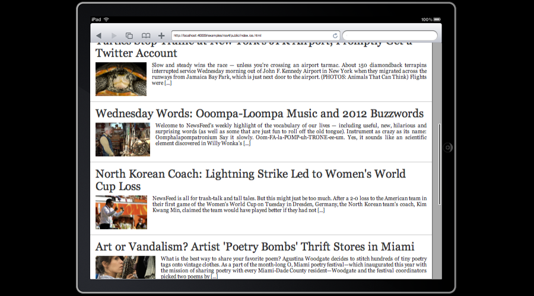

We are now going to see how easy it is to make it work on iOS. Unleash the power of the adaptors !
tree.data.jsNo changes are required: the data we use will be the same and it is already fetched in a portable way. Enjoy!
tree.ui.jsAll we need to add is a single line to the List UI Element.
...
{
id: 'newsList', // internal id
type: List, // type of ui widget
orientation: 'left', // change navigations properties of the grid
dataPath: '/news', // data which will be used to populate the list
noMouseAutoFocus: true, // deactivate focus on mouse hover
moveOnFocus: true, // keep focused element on display
scroller: true, // add scrolling capabilities used for iOS
itemInnerTemplate: // override default template for list items
'<div class="clearfix">' +
' <h1 class="title"><%= item.title %></h1>' +
' <img src="<%= item.image %>" />' +
' <div class="description"><%= item.description %></div>' +
'</div>',
loadingTemplate: null // override default template used during data loading
},
...
app.jsWe are going to refactor app.js so that it contains only code common to all adapters.
Joshfire.define(['joshfire/app', 'joshfire/class', './tree.data', './tree.ui', 'joshfire/utils/splashscreen'],
function(BaseApp, Class, Data, UI, SC) {
Joshfire.debug = true;
return Class(BaseApp, {
id: 'exampleRss',
uiClass: UI,
dataClass: Data,
setup: function(callback) {
var self = this;
// Basic util allowing us to display / hide a splashcreen
var splashscreen = new SC();
// We subscribe to 'data' event to remove the slapshscreen when data is loaded
self.ui.element('/newsList').subscribe('data', function(ev) {
splashscreen.remove();
});
// !!! REMOVED SOME CODE
// If a class inherit from this one, it will be its job to call the callback
// in this case, we may called without the callback parameter
if (callback)
callback(null, true);
}
});
});
app.browser.jsThis is where the specific code for browsers belongs. We move the code which used to be in app.js here.
Joshfire.define(['./app', 'joshfire/class', 'joshfire/vendor/underscore', 'joshfire/vendor/jquery'],
function(App, Class, _, $) {
Joshfire.debug = true;
// Note that now we inherit from the App class in app.js
return Class(App, {
setup: function(callback) {
var self = this;
// Call parent setup method (that would be the one in 'app.js')
this.__super();
// When data is loaded, give focus to '/newsList/'
self.ui.element('/newsList').subscribe('data', function(ev) {
self.ui.moveTo('focus', '/newsList');
});
// Load a jQuery plugin which displays boxes
Joshfire.require(['public/js/jquery.colorbox-min'], function() {
// When '/newsInfo' dataRoot is changed (it does when selections occurs on '/newsList') ...
self.ui.element('/newsInfo').subscribe('afterRefresh', function(ev, id) {
// ... give focus to '/newsInfo' ...
self.ui.moveTo('focus', '/newsInfo');
// ... display '/newsInfo' inside a styled box thanks to colorbox plugin !
$.colorbox({width:'800px', inline:true, href:'#'+ self.ui.element('/newsInfo').htmlId +' .info',
// When user close the box ...
onCleanup: function() {
// ... give focus back to '/newsList' !
self.ui.moveTo('focus', '/newsList');
}
});
});
});
callback(null, true);
}
});
});
app.ios.jsThis is where the specific code for iOS belongs.
Joshfire.define(['./app', 'joshfire/class', 'joshfire/vendor/underscore'], function(App, Class, _) {
Joshfire.debug = true;
return Class(App, {
setup: function(callback) {
var self = this;
this.__super();
// CODE SPECIFIC TO iOS
// When an item in '/newsList' is selected, '/newsInfo' gets refreshed
self.ui.element('/newsInfo').subscribe('afterRefresh', function(ev, id) {
// We show '/newsInfo'
self.ui.element('/newsInfo').show();
});
// When '/newsInfo' is 'tapped' (clicked) ...
self.ui.element('/newsInfo').subscribe('input', function(ev, id) {
if (id[0] == 'enter')
// ... we hide '/newsInfo' so '/newsList' gets displayed again
self.ui.element('/newsInfo').hide();
});
callback(null, true);
}
});
});
index filesindex.browser.htmlThis is where we move the content of the previous index.html file.
<!DOCTYPE html>
<html>
<head>
<title>RSS Feed App</title>
<link rel="stylesheet" href="css/app.browser.css" />
<link rel="stylesheet" href="css/colorbox.css" />
<script data-main="../" src="../joshfire/adapters/browser/bootstrap.js"></script>
</head>
<body>
<script>
Joshfire.debug = true;
Joshfire.require(['src/app.browser'], function(App) { // browser app
console.log("Code is loaded!");
new App();
});
</script>
<div id="splashscreen">RSS Feed Example</div>
</body>
</html>
index.ios.htmlThis is the entrypoint for the iOS version of the application. As you will see, changes are minimal.
<!DOCTYPE html>
<html>
<head>
<title>RSS Feed App</title>
<link rel="stylesheet" href="css/app.ios.css" /> <!-- A custom stylesheet -->
<script data-main="../" src="../joshfire/adapters/ios/bootstrap.js"></script> <!-- iOS bootstrap -->
</head>
<body>
<script>
Joshfire.debug = true;
Joshfire.require(['src/app.ios'], function(App) { // iOS app
console.log("Code is loaded!");
new App();
});
</script>
<div id="splashscreen">RSS Feed Example</div>
</body>
</html>
Colorbox dependencies:
public/js/jquery.colorbox-min.jspublic/css/colorbox.csspublic/img/control.pngpublic/img/loading.gifRun it!You already know the browser version. On iOS, it should look like this:

As you can see, the two versions of the application only differs by something like 15 lines of code!
{kind=link}
{kind=link}